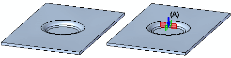

feature origin
A reference point on a procedural feature that you can use to move the procedural feature without changing its shape. The feature origin (A) is displayed automatically when you edit a procedural feature. You can also display a feature origin using a shortcut menu command when the feature is selected in PathFinder.

The feature origin is used primarily in sheet metal models (.psm) for features such as dimples, drawn cutouts, and louvers.